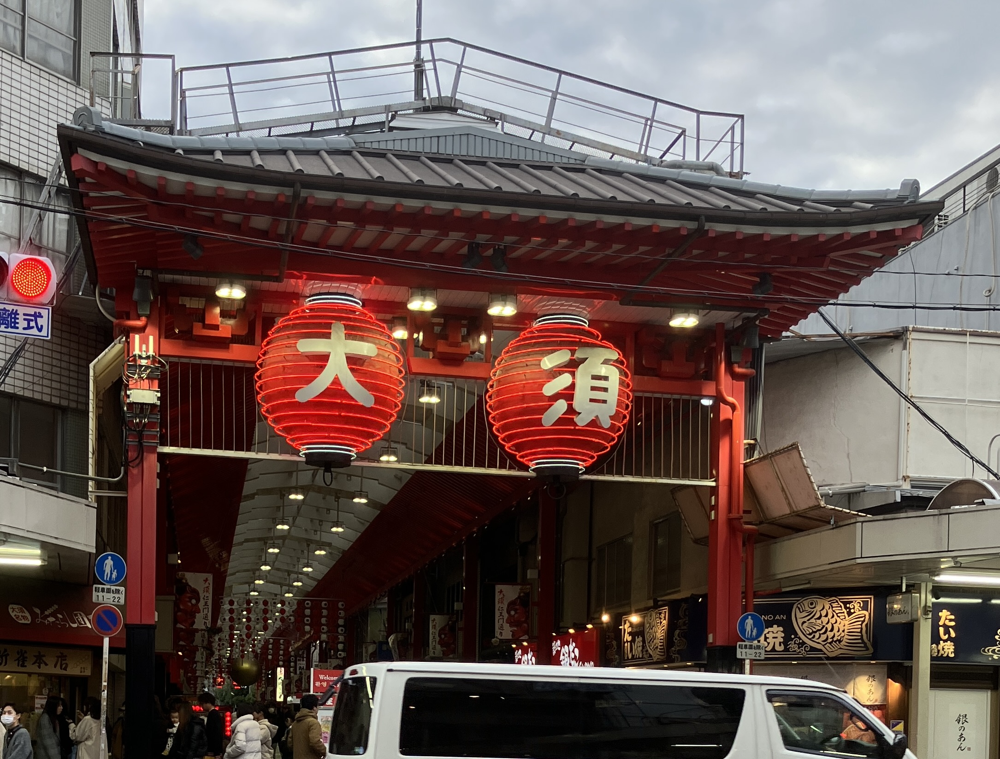

名古屋のモーニング文化
名古屋のモーニングとは飲み物１杯に対してトーストなどのおまけがついてくるサービスのこと
この日は朝から名古屋のモーニング文化を体感するためにホテル近くの喫茶店『レンガ亭』に向かった
店内はとても落ち着いていて地元の方も多く過ごしやすかったです
今回は450円のドリンク一杯でトーストとサラダがついてきました↓
レンガ亭 カフェオレ430円（トーストとサラダはおまけ）
📍レンガ亭
住所：愛知県名古屋市中区丸の内”2丁目15−30 ライオンズマンション丸の内第２
アクセス：地下鉄丸の内駅から徒歩1分
営業時間：月〜金7:30〜18:00土7:30〜16:00祝日7:00〜14:00
定休日：日曜日
公式サイト：食べログはこちら
喫煙可能なのでタバコが苦手な方は注意が必要⚠️
美味し過ぎたひつまぶし
愛知県名古屋市発祥の郷土料理で、ご飯の上に刻んだうなぎをのせ、薬味や出汁を加えて、様々な食べ方で楽しめる料理
今回は名古屋で多くお店を出しているまるや本店に行きました！
まるや本店 名駅店
平日のオープン開始の11時前に行ったらすでに長蛇の列が😨
約１時間ほど待って店内へ
今回は上ひつまぶしを食べました。
鰻がカリふわな食感でタレとの相性も抜群で美味しかったです！
また少し食べ進めたところでお茶漬けにして食べたのですがこれも絶品でした。

上ひつまぶし 5250円
📍まるや 名駅店
住所：愛知県名古屋市中村区名駅1-2-1名鉄百貨店本館9F レストラン街
アクセス：名鉄名古屋本線名鉄名古屋駅 徒歩5分
営業時間：11:00～22:00（L.O.21:00）
定休日：百貨店に準ずる
公式サイト：こちら
開店と同時にいくと平日でも並んでいる可能性があるので時間に余裕のある時に行くか、時間をずらすことをお勧めします
味噌ととんかつのハーモニー
ひつまぶしを食べた約４時間後、味噌カツを食べに名古屋で有名の矢場とんへ
味噌カツとは揚げたてのトンカツに、豆味噌をベースとした甘辛いタレをかけた料理
初めて食べたのですが、甘辛い味噌ダレとサックサクのとんかつが合わさってとても美味しかったです！

ロースとんかつ 1450円
📍矢場とん 栄LACHIC店
大須商店街で食べ歩き
食べ歩きができることで有名な大須商店街に来た。食べ歩きに来る前に３食も食べてしまったのでたい焼きと団子しか食べれなかった。またリベンジしたい。
大須商店街入口
📍大須商店街
住所：愛知県名古屋市中区大須３丁目
アクセス：地下鉄名城線・鶴舞線「上前津」駅 8番出口または12番出口より徒歩2分
営業時間：店によって異なるが一般的に午前10時〜午後8時まで
定休日：火・祝
公式サイト：こちら
店によって営業時間が変化するので行きたいお店の営業時間をチェックした方がいいです！
名古屋は名物の美味しいものが多くて私みたいな食べ物メインで回っても1日楽しめました！
おすすめ度 ⭐️⭐️⭐️⭐️